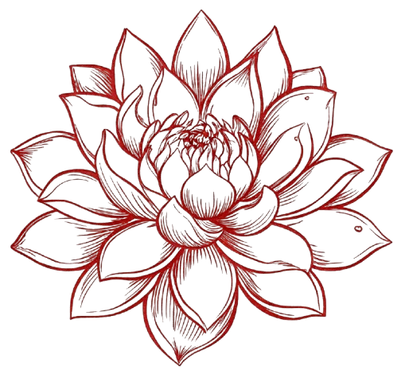

Atendimento
Cliente realiza seu consumo.

RENKONTECHConectando a base ao topo do seu negócio.
Um ecossistema digital que integra atendimento, pagamentos e gestão financeira para transformar a operação do restaurante.
A RenkonTech
Renkon (レンコン / 蓮根) significa raiz de lótus. Seu formato, cheio de furos simétricos, inspirou nossa identidade e uma brincadeira do universo da programação.
Se sistemas podem ter “furos”, nossa missão é construir o oposto: soluções com bases sólidas, integrações confiáveis e processos mais seguros.
O problema
Mais etapas e maior possibilidade de erro.
Comprovantes e informações espalhados.
Dificuldade para visualizar o negócio em tempo real.
Ecossistema integrado
Uma arquitetura pensada para fazer cada informação viajar pelo negócio sem perder contexto.
O garçom consulta mesas, visualiza o consumo e realiza o pagamento diretamente no local.
Camada responsável por conectar atendimento, pagamentos, regras de negócio e dados.
O gestor acompanha vendas, caixa, despesas, conciliação e indicadores.
Como funciona
Cliente realiza seu consumo.
Garçom acessa a mesa no Smart POS.
Consumo e valor são apresentados.
Transação realizada no local.
Pagamento é validado e registrado.
Status atualizado automaticamente.
Dados entram no controle financeiro.
Gestor acompanha os indicadores.
Tudo conectado
Visualização rápida do estado das mesas e do atendimento.
Itens, quantidades e valor total em um único lugar.
PIX, cartão e dinheiro integrados ao fechamento.
Transações registradas para reduzir conferências manuais.
Mesa, garçom, valor, horário e forma de pagamento.
Dados organizados para apoiar decisões do gestor.
Por baixo da experiência
A arquitetura separa responsabilidades e centraliza os dados, permitindo que o atendimento e a gestão compartilhem a mesma fonte de informação.
Conciliação financeira
As informações de cada transação podem ser vinculadas à operação realizada, criando uma visão centralizada do movimento financeiro.
Por que RenkonTech?
Menos etapas no fechamento e mais agilidade no atendimento.
Smart POS, API, banco e Back Office trabalhando juntos.
Informações centralizadas para uma gestão orientada por dados.
Histórico das operações para maior controle administrativo.
Case demonstrativo
Uma aplicação pensada para transformar o fechamento, o atendimento e a gestão financeira de um restaurante em uma operação integrada.
Roadmap
Vamos conversar?
RenkonTech — tecnologia com raízes fortes.
Entrar em contato ↗